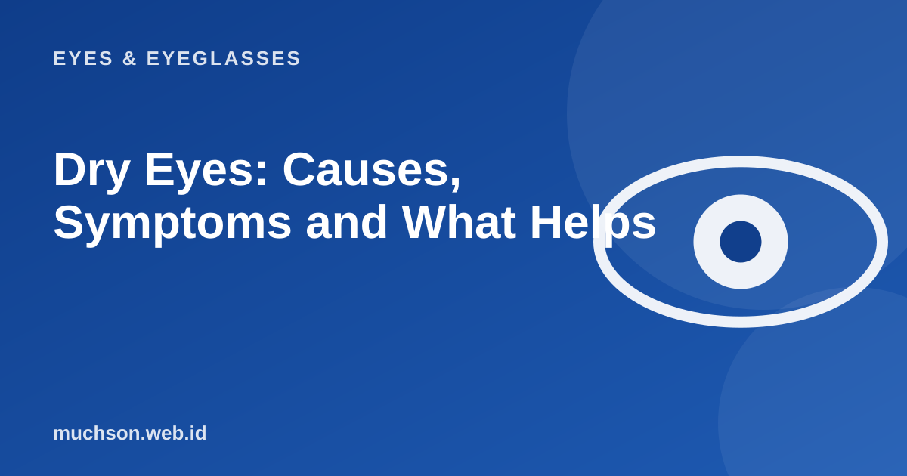

Home › Articles › Eyes & Eyeglasses
Eyes & EyeglassesDry Eyes: Causes, Symptoms and What Helps
Oddly, dry eyes can make your eyes water, which is why many people are confused. Below is how the tear film works, what damages it, and simple steps you can try.

The tear film has three layers
Text description of the diagram
- Oil layer (outermost): Stops tears from evaporating too fast
- Water layer (middle): Moistens and cleans the eye surface
- Mucus layer (innermost): Helps the water stick evenly to the eye surface
Dry eye happens when there are too few tears, or when they evaporate too fast because the oil layer is disturbed. The dry surface becomes irritated, and the body responds with a flood of poor-quality tears. The result is eyes that water and sting at the same time.
Common causes and triggers
- Staring at a screen for a long time so you blink less.
- Air-conditioned, windy or dusty rooms.
- Wearing contact lenses too long.
- Ageing, hormonal changes, or certain medicines.
- Problems with the oil glands in the eyelids.
- Too little sleep and too little water.
Check yourself
Steps that help
- Blink fully and often, especially when looking at a screen.
- Use the 20-20-20 rule to take breaks.
- Point the air-conditioning or fan away from your face.
- Use preservative-free artificial tears as advised by a pharmacist or doctor.
- Apply a warm compress to the eyelids for a few minutes to help the oil glands.
- Drink enough water and get enough sleep.
- Take out contact lenses if your eyes feel uncomfortable, and do not wear them overnight.
Do not use "get the red out" eye drops or drops containing steroids without a prescription. Drops that "remove redness" can make symptoms worse if used constantly.
Get checked right away if your eyes are very painful, sensitive to light, your vision falls, there is thick discharge, or symptoms do not improve within a few days.